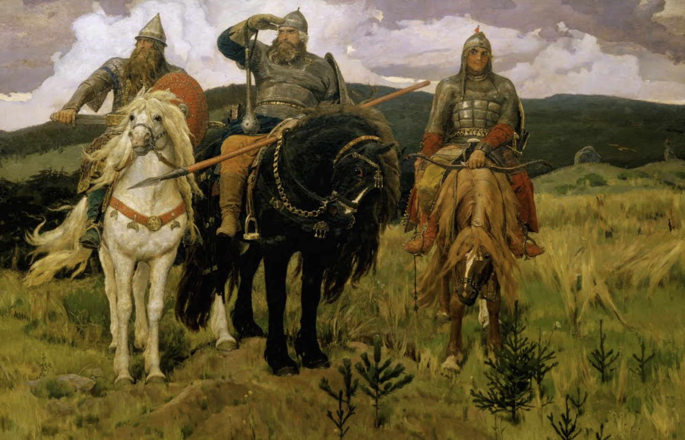
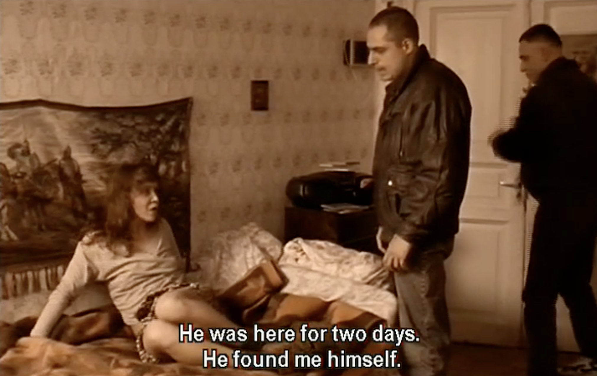

Viktor Vasnetsov is a Russian artist, one of co-founders to the Russian Revival style. It was an idea that if one tries to imitate the style of the previous era (folklore or architectural style), one can capture something essential about one's national character and history. In Western Europe, Gothic Revival is a good example (see the Great Clock Tower of Westminster). In case of Russian artists and architects, the revival meant the evocation of pre-Petrine (pre-westernization) architecture. With his interest in Russian traditions and mythology. Vasnestsov produced paintings on folk themes. His career coincided with the rule of Alexander the III and his son Nicholas the II.

the Epic Warriors by Vasnetsov became a common place in Russian popular culture reproduced on carpets, cigarette packs, etc. Aleksei Balabanov uses this image in his Brother. the Epic Warriors are hanging on the wall next to Sveta's bed. The warriors are supposed to protect Sveta. It is however a cheap commercial reproduction of Vasnetsov's painting and the Warriors protect nobody. Sveta is raped by the gangsters in front of the reproduction of the Epic Warriors (fig.2). Danila didn't protet her either (fig.3)
In Russian architecture the revival style meant using elements of pre-Petrine medieval architecture. Here are some commom devices: "pot-bellied" columns, low arched ceilings, narrow window-loop holes, tented roofs, frescoes with floral designs, use of multicolored tiles and massive forging. A good example of such architecture is the Savior of Spilled Blood in St. Petersburg (fig.4).